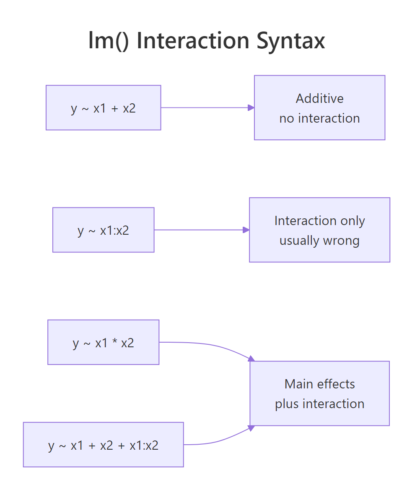
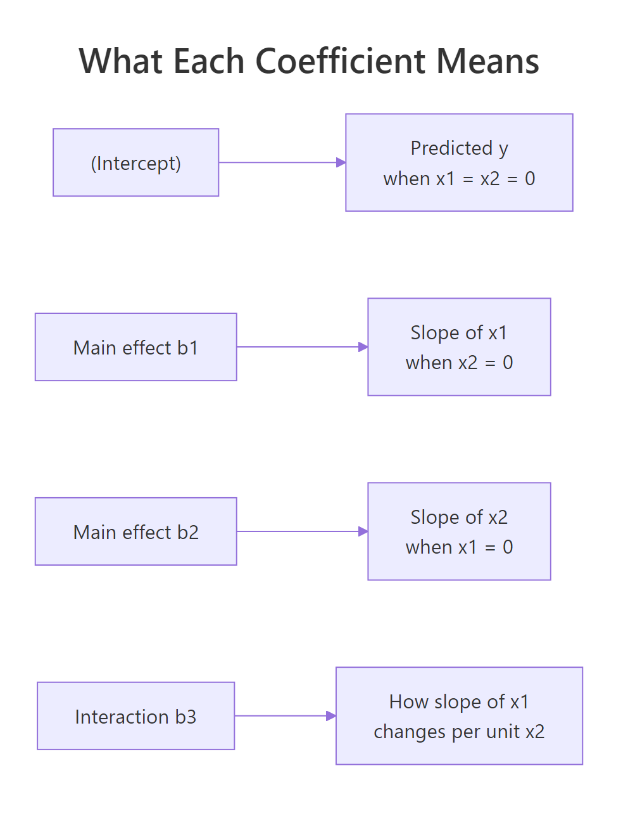
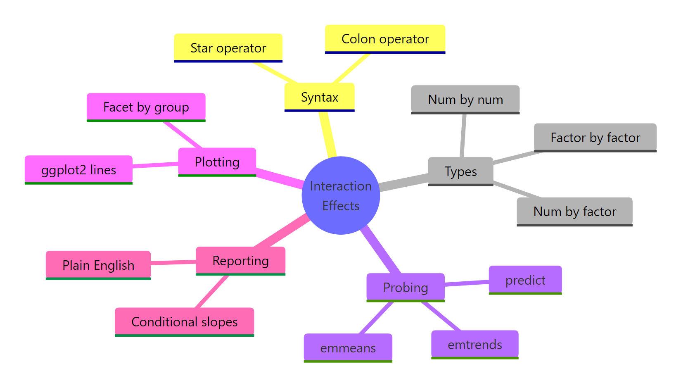

Interaction Effects in R: Add Them, Test Them, and Actually Understand the Output
An interaction effect means the effect of one predictor depends on the value of another. In R you write it with * or : inside lm(), then interpret the term that captures how the slope of one variable shifts with the other.
What is an interaction effect, and when do you need one?
Here is the setup that motivates everything. Predicting mpg from hp in mtcars is only part of the story. A heavier car may be penalised more per extra horsepower than a lighter one, so the slope of mpg on hp itself depends on wt. That is an interaction. Fit lm(mpg ~ hp * wt) and look at the hp:wt row; if it is non-zero, the two predictors are not acting independently.
The hp:wt row is the one that matters. Its estimate is 0.0278 with p = 0.0015, which is highly significant. Translation: for every extra ton of weight, the slope of hp on mpg shifts upward by 0.028, becoming less negative. A 200-hp engine still hurts mileage, but it hurts more in a light car than in a heavy one.
Try it: Fit the classic iris interaction: how does the slope of Petal.Width on Petal.Length change across Species? Save the model as ex_m and then pull the coefficient for Petal.Length:Speciesvirginica.
Click to reveal solution
Explanation: Petal.Length:Speciesvirginica = 0.087 means virginica's slope of Petal.Width on Petal.Length is about 0.087 higher than setosa's baseline slope of 0.201.
How do you add interaction terms in R using * and :?
R's formula shorthand packs two operators. x1 * x2 expands to x1 + x2 + x1:x2, adding the main effects automatically. x1:x2 is the pure interaction column, with no main effects. Nine times out of ten you want *; using : alone forces both simple slopes to pivot through the origin, which is almost never what the data actually do.

Figure 1: How , :, and explicit + forms map to model structure.*
m_full and m_star produce the exact same fit; pick whichever reads best to you. The interaction model beats the additive model on AIC by about 7 points, which is strong evidence the interaction earns its slot. The all.equal() call is a quick sanity check that your two specifications really are the same model.
:. Writing y ~ x1:x2 alone forces both simple slopes to zero at the origin, which is almost never what you want. Stick to x1 * x2 unless you have a specific theoretical reason to drop a main effect.Try it: Write two equivalent formulas for an interaction between hp and factor(cyl) on mpg using mtcars, then verify they fit the same model.
Click to reveal solution
Explanation: The * operator is pure sugar for "main effects plus interaction". Both formulas produce an identical design matrix and identical coefficients.
How do you interpret the interaction coefficient?
The math helps clarify what each number buys you. In a two-predictor interaction model, the fitted equation is:
$$y = \beta_0 + \beta_1 x_1 + \beta_2 x_2 + \beta_3 x_1 x_2$$
Where:
- $\beta_0$ is the intercept (predicted
ywhen both predictors are 0) - $\beta_1$ is the slope of
x1whenx2 = 0 - $\beta_2$ is the slope of
x2whenx1 = 0 - $\beta_3$ is the interaction; it tells you how much the slope of
x1changes per unit increase inx2
So the conditional slope of x1 is $\beta_1 + \beta_3 x_2$. Plug in any value of the moderator and you get the slope of the focal predictor at that moderator value.

Figure 2: What each coefficient in an interaction model stands for.
At wt = 2 tons, each extra horsepower costs 0.065 mpg. At wt = 4 tons, the penalty shrinks to 0.009 mpg, essentially flat. Heavy cars are already so inefficient that a bit more power barely dents their mileage; lightweights pay dearly. The main-effect value for hp alone is the slope at wt = 0, which is nonsense because no car weighs nothing, and that is exactly why centering is usually the right next step.
Now every number reads cleanly. The intercept 18.88 is the predicted mpg of an average-hp, average-wt car. The main effect for hp_c is the slope of hp at the mean weight, and the main effect for wt_c is the slope of wt at the mean horsepower. The interaction coefficient is unchanged at 0.028, which is the point.
Try it: Using the uncentered model m1, compute the predicted slope of hp when wt = 3.5 tons.
Click to reveal solution
Explanation: Plug wt = 3.5 into slope of hp = b_hp + b_hp:wt * wt. The slope of hp for a 3.5-ton car is about -0.023 mpg per horsepower.
How do you handle continuous x categorical interactions?
Categorical predictors work exactly like continuous ones, just expanded into dummy columns. When you fit y ~ x * group, R fits one slope per group. The reference level's slope is the main effect of x. Each other group's slope is the main effect plus that group's interaction term. This is the cleanest way to answer "does this relationship differ across groups?".
Read it row by row. (Intercept) = -0.048 is the predicted Petal.Width for a setosa flower with zero-length petals (extrapolated, but that is how the math works). Petal.Length = 0.201 is the slope for setosa, the reference level. Versicolor's slope is 0.201 + 0.127 = 0.328, and virginica's is 0.201 + 0.087 = 0.288. Versicolor flowers gain petal width fastest as their petals grow longer.
Try it: Compute the fitted slope of Petal.Length inside versicolor using the coefficients of m_iris.
Click to reveal solution
Explanation: The reference slope (setosa) is b["Petal.Length"]. Each non-reference group gets the reference slope plus its own interaction coefficient, so versicolor's slope is 0.201 + 0.127 = 0.328.
How do you compute simple slopes with emmeans?
Adding coefficients by hand works but does not scale. The emmeans package gives you conditional slopes and predicted values with confidence intervals in one line. emtrends() returns the slope of a continuous focal predictor at each moderator level. emmeans() returns the predicted y at specific combinations.
Now you can read species-specific slopes straight off the table, with 95% confidence intervals included. Setosa's slope is imprecise because the group has short, narrow petals with low variation. Versicolor and virginica have tighter CIs that do not overlap with zero, so both slopes are robustly positive.
emmeans() is the right tool when you want to answer "what does the model predict at these specific values?". Here you can see that a 5 cm petal predicts a versicolor width of 2.22 cm versus a virginica width of 2.36 cm, a non-trivial difference even though the two slopes are similar.
emtrends() when your focal predictor is continuous and you want slopes. Use emmeans() when you want predicted y-values at specific moderator combinations. Both return confidence intervals and support pairwise comparisons via pairs().Try it: Using m_iris, compute the simple slope of Petal.Length inside each species and save the result as ex_slopes.
Click to reveal solution
Explanation: emtrends() does the coefficient arithmetic for you and adds standard errors and confidence intervals.
How do you visualize an interaction plot?
A picture makes the story obvious. Parallel lines mean no interaction, divergent lines mean the effect of X1 depends on X2, and crossing lines mean a flat-out reversal. For a continuous-by-categorical model, colour the lines by the categorical variable. For a continuous-by-continuous model, bin the moderator or plot lines at a handful of representative values.
The three fitted lines have visibly different slopes, which is the interaction made visual. Setosa's line is shorter and flatter because the species has tight petal dimensions. Versicolor and virginica ramp up at similar rates, consistent with the near-equal slopes you saw from emtrends().
Light cars show the steepest negative slope and heavy cars the flattest, exactly as the conditional-slope calculation predicted. Binning is only a visual shortcut; the model itself is still fit on continuous wt. You can also plot three smooth lines at wt = mean - SD, mean, mean + SD using emmeans output if you prefer fully smooth curves.
Try it: Redraw the mtcars plot using geom_smooth(se = FALSE) so the three lines are cleaner and easier to compare.
Click to reveal solution
Explanation: Setting se = FALSE suppresses the confidence ribbons and lets readers focus on the slope differences between weight bins.
How do you test if an interaction is statistically significant?
You have two options and they agree in simple cases. The t-test on the interaction coefficient (the Pr(>|t|) column in summary()) tests whether that single term differs from zero. The F-test from anova() compares the full model to the additive model; it is the cleaner hypothesis test when the interaction involves a factor with more than two levels, because it pools the multiple interaction columns into one test.
The F-statistic of 14.1 with p = 0.0008 tells you that adding the hp:wt term explains significantly more variance than the additive model alone. The residual sum of squares drops from 195 to 130, a 33% reduction. For a single-df interaction like this one, the F-test's p-value matches the t-test's p-value from summary(m1) exactly.
AIC agrees: the interaction model sits about 7 points lower, which counts as strong evidence. When two model-selection criteria point the same way, you can be comfortable keeping the interaction in the final model.
wt = 0, or with centering wt = mean).Try it: Run an F-test to check whether wt*am improves mpg ~ wt + am on mtcars.
Click to reveal solution
Explanation: The interaction adds about 90 units of explained sum of squares (F = 13.5, p = 0.001). Manual and automatic cars lose mpg at different rates per ton of weight.
Practice Exercises
Exercise 1: Continuous x categorical on mtcars
Fit my_m1 <- lm(mpg ~ wt * factor(am), data = mtcars). Use emtrends() to get the slope of wt inside each transmission type, and save the result as my_slopes.
Click to reveal solution
Explanation: Manual cars (am=1) lose 9.1 mpg per ton, automatic cars lose 3.8. The manual group's slope is almost 2.4x steeper, and the two CIs do not overlap, so the slopes differ meaningfully.
Exercise 2: Centering and AIC comparison on iris
Mean-center Sepal.Length as sl_c, fit my_m2 <- lm(Sepal.Width ~ sl_c * Species, data = iris_c), and compare its AIC to the additive model Sepal.Width ~ sl_c + Species. Which is lower, and by how much?
Click to reveal solution
Explanation: The interaction model's AIC is about 7 points lower, strong evidence that the three species have genuinely different slopes of Sepal.Width on Sepal.Length.
Exercise 3: Two factors on ToothGrowth
Fit my_m3 <- lm(len ~ supp * factor(dose), data = ToothGrowth). Use anova() to test the supp:factor(dose) interaction, then compute predicted tooth length at each combination with emmeans().
Click to reveal solution
Explanation: The interaction is significant (F = 4.1, p = 0.022). The OJ advantage is large at dose 0.5 and 1 but essentially disappears at dose 2, which is exactly what the emmeans table shows numerically.
Complete Example
Here is the full workflow from model to reportable finding, end-to-end on mtcars.
And here is the two-sentence write-up for a non-statistical audience:
"The effect of horsepower on fuel economy depends on a car's weight (F(1, 28) = 14.1, p < 0.001). Lightweight cars lose 0.06 mpg per extra horsepower, medium cars 0.04, and heavy cars less than 0.01, so extra power hurts mileage most in the lightest vehicles."
That single paragraph bundles the significance test and the practical implication. You did the stats work; now you translate it.
Summary
| Concept | Answer |
|---|---|
| What | Effect of one predictor depends on another |
| Syntax | y ~ x1 * x2 (same as x1 + x2 + x1:x2) |
| Interpret main effects | Only meaningful when the other predictor = 0, so center first |
| Simple slopes | emtrends() for slopes, emmeans() for predicted values |
| Test significance | anova(additive, interaction) F-test or single-term t-test |
| Plot | ggplot2 lines; parallel = none, divergent = interaction |
| Reporting | Include simple slopes or marginal effects alongside the test |

Figure 3: The whole interaction workflow at a glance.
References
- UCLA OARC. Decomposing, Probing, and Plotting Interactions in R. Link
- Long, J. interactions package vignette, CRAN. Link
- Lenth, R. emmeans: Estimated Marginal Means, CRAN. Link
- Aiken, L. and West, S. Multiple Regression: Testing and Interpreting Interactions. Sage (1991).
- Gelman, A. and Hill, J. Data Analysis Using Regression and Multilevel/Hierarchical Models. Cambridge University Press (2007).
- STHDA. Interaction Effect in Multiple Regression: Essentials. Link
- R Core Team. formula reference. Link
- Wickham, H. ggplot2: Elegant Graphics for Data Analysis. Springer.
Continue Learning
- Dummy Variables in R: how R codes categorical predictors into design-matrix columns, the prerequisite for reading any
Species*Petal.Lengthoutput. - Multiple Regression in R: the additive model you extend when you add an interaction.
- Linear Regression Assumptions in R: diagnostics that still apply once you have added an interaction term.